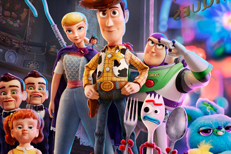

Астронавт Базз, ковбой Вуди, пес Слинки, тиранозавр Рекс и другие игрушки переехали в комнату малышки Бонни, у которой не за горами знаменательное событие: она отправляется в детский сад. Преданный до кончиков шпор на ковбойских ботинках Вуди вызывается помочь Бонни сделать первый шаг во взрослую жизнь, однако девочка не нуждается в поддержке старой куклы, ведь у нее появился новый друг — Вилкинс.
«История игрушек 4» — незапланированной ребенок в анимационном семействе Pixar. В 2010 году продюсеры компании заявили, что третья часть мультфильма станет официальным завершением франшизы. И в каком-то смысле они свое слово сдержали, ведь «История игрушек 4» — это едва ли продолжение, скорее нерассказанная история, что-то вроде неофициального спин-оффа, посвященного ковбою Вуди.
Первые три части мультфильма, кроме прочего, рассказывали о таких важных аспектах самопознания человека, как поиск самоидентичности, осознание безусловности любви или неизбежности смерти. «История игрушек 4» не менее философична, более того, она весьма чувствительна к актуальной повестке. Не обошлось тут, в частности, без феминизма — это, возможно, первая и единственная часть серии, где женским персонажам отведено столько эпизодов. Так, например, пастушка Бо больше не желает быть чьей-то любимой игрушкой, предпочитая вести самодостаточную и независимую жизнь на детской площадке в Луна-парке.
Наверное, мир мог бы спокойно обойтись без четвертой части детища Джона Лассетера, которая в буквальном смысле забыла имя своего отца. Положа руку на сердце, трилогия «Истории игрушек» выглядела цельной и завершенной, она не нуждалась ни в приквелах, ни в спин-оффах. И все же, стоит признать, что этот мультфильм сделал всех нас чуточку добрее, пусть и на короткие два часа.
Больше информации: